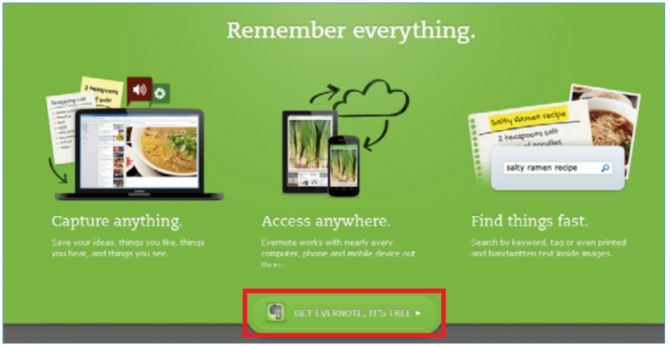

I will start this point with an interesting statistics. According to surveys done by Akamai and Gomez.com, 47% of the web users expect a web page to load in 2 seconds or less and 40% of people abandon a website that takes more than 3 seconds to load. Just think about this, if your website loading time is more than 3 seconds then you are losing almost half of your visitors without even having a look to your website. Your website loading time must be less than 3 seconds. Walmart Found for every 1 second of improvement in loading speed they experienced up to 2% increase in conversions.

There are numerous reasons that can increase your website loading time. I will outline some of the common reasons here:
- Using too many plugins
- Excessive use of flash
- Broken links
- Bad coding
- Images are too big in size
Many techniques, both from a design and coding aspect can be applied to your website for faster loading. Some of the techniques are given below-
- Don’t use too many plugins
- Optimize your images
- Reduce server response time
- Minimize HTTP Requests/li>
- Reduce redirects
2. Not Having a Prominent Call to Action (CTA)
One of the must have elements in your website for conversion is the call to action button. No one is going to take action (e.g. sign-up for a mailing list, make a purchase, request a quote, or simply call you) if you don’t ask them to do so.
You have to make it clear to your visitors what you want them to do. Lack of prominent call to action button on a website wastes chance of turning visitors into leads, subscribers and customers.
Just take a look at the below screenshot and it has no clear CTA button. There is a weak one at the bottom but the color of the button and the background color is exactly same. Therefore, the CTA button can easily be overlooked by the visitors.
Here are the few things you need consider to craft a winning CTA-
- Your CTA button color must be contrasting
- The button text should explain what will happen after clicking
- You need to include the button in right place so that people can see that easily
3. Using the weak or common images
Images are one of the important and eye-catching design elements on a website. I believe we all know that an image is worth a thousand words.
The above statement is appropriate if your website images are meaningful, relevant, high quality and authentic.
If you use the images that can be found on hundreds of other websites, then they may work negatively. Using the stock images undermine your credibility. Just say no to stock images.
Make sure every image on your website is relevant, meaningful and of course high quality. They should serve a purpose like pushing the visitors toward the conversion goal.

“The number of people using mobile devices outstripped people on desktop computers in 2014.” – Jim Edwards, Business Insider , April 2014.
In the middle of 2016, you can’t afford to ignore the responsiveness. Human behavior has changed significantly and people are using smartphones and tablets on the go, in their beds, even in the bathrooms.
As now-a-days lots of people are using smartphones and tablets for browsing websites and if your website is not mobile friendly then they will find your website broken when they will try to visit.
Not having a responsive design can cause the loss of traffic as well as potential customers to your site. You need to ensure that your website is designed to accommodate all visitors regardless of the type of devices that people are using when visiting.
You website navigation play a major role to convert the visitors into leads, subscribers or customers.
Having too many options can paralyze the visitors to take any action and will frustrate them that will eventually end up in abandoning your website.
If your website has a clear navigation, your audience should effortlessly find their way towards your desired action.
Therefore, the navigation of your website should be easy for the visitors to find what they are looking for. Otherwise, they will rapidly take the exit route and probably never come back to your website again.
Nobody likes a website that is boring and dull or one that seems like it has not been updated in 5 years.
When the visitors come to a site that appears dated, they immediately think that this company does not keep up with modern times. Or, even bad, they may also think this company is no longer in business.
Trust me, there are so many old websites still online but they are no longer in operation.
When people come to an old looking website, most of them just click away as fast as possible and they will probably move on to your competitor’s site.
As a general rule, I recommend people that they should consider updating or refreshing their websites in every 2 to 3 years.
Colors play a crucial role in web design. They help to highlight the buttons and links, make your site visually-appealing and even increase the customer’s overall web experience.
At the same time using the wrong color or too many colors can confuse the visitors.
Having the deep knowledge of color phycology is important to pick the right color for your website. Let me show you some of the colors associated feelings they typically convey:
- White: pure, clean, honest
- Green: growth, comforting, organic, positive go
- Light Blue: cool, masculine, youthful
- Dark Blue: trustworthy, mature, stable, calming
- Gray: cool, integrity, neutral, mature
- Pink: warm, youthful, feminine
- Purple: youthful, royal, contemporary,
- Purple: youthful, royal, contemporary,
- Red: excitement, hot, danger, stop, negative
- Yellow: emotional, caution, positive
- Brown: organic, unpretentious, wholesome
- Gold: conservative, stable, elegant,
- Orange: organic, emotional, positive
- Black: serious, heavy, death
Keep the each color associated feelings in mind while you choosing the color for your website and limit your palette to about 2 to 3 colors only.
Plugins help to introduce new features to the website. But, using too many plugins can increase your website loading time. I already have discussed the consequence of slow loading speed.
Sometimes people try to use different plugins into their websites just because they can, not because they really need to have them.
Make sure you don’t use any extraneous stuff unless you must need it and only use the plugins if they are really needed to make your site functional.
As much as images and videos dominate the content, text still plays a major role in compelling people to stay on your website.
In spite of knowing that some websites have the habit of putting up oddly shaped fonts that are very hard to read. If people can’t read your copy easily then how people will take your desired action.
Let me show you an example here:
The above example looks nice but can you read it?
Here’s how you can make your copy more readable-
- Use font size 16px or more
- Choosing legible font styles
- The formula for line height is 1.6 * the font size
Bottom Line
All great websites are designed to serve the customer better, so keep your website simple, easy and concise. That’s the thumb role for web design.
Use this post as a checklist of website design mistakes to check if your website has any of the above mistakes. If so then it’s time to consider a new design.
Back to top